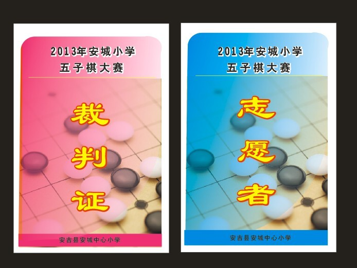
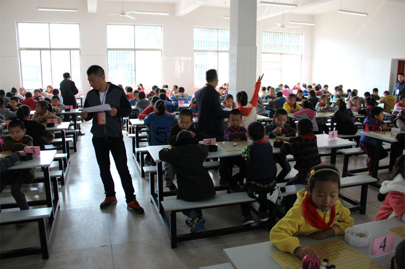

2013年安吉县安城小学五子棋竞赛活动（更新中……）
#1 2013年安吉县安城小学五子棋竞赛活动（更新中……） 作者：康健 发表时间：2013-10-28 9:26:32
2013
年安吉县安城小学五子棋竞赛活动方案
一、 活动目的：五子棋运动在我国有着深厚的群众基础，随着国家体育总局将五子棋列为正式比赛项目以及全国智力运动会项目，更是得到了快速的推广。为了 发展传统特色体育项目，开展好小学生五子棋运动，给小学生提供切磋棋艺、锻炼发展的平台，特举办本次比赛。
二、 活动时间： 2013 年11月15日（周五）
三、 活动地点和场地：安城中心小学篮球场
四、
竞赛项目和竞赛办法
五子棋个人赛、采用国家体育总局棋牌运动管理中心的《中国五子棋竞赛规则》
五、 活动组织
(一) 组织领导：张大勇、潘玲芳、沈锋锋
(二) 裁判长：康健
(三) 编排：康健（兼）
(四) 裁判：付国华、朱颖、王永青
六、
参赛资格
在校小学生均可报名参加，每班选派八名选手参赛（男女不限）
七、
分组情况
五六年级为儿童甲组，三四年级为儿童乙组，一二年级为儿童丙组
八、 竞赛方 法：
（一） 个人赛分组比赛。
（二） 竞赛制度：瑞士积分制九轮。
（三） 比赛时限:采用30分钟共用时。
（四） 名次计算:
积分编排制比赛依次比较得分、对手分、中间对手分、胜局数区分名次，均为高者列前。如再相同，则决定冠军归属的加赛快棋，否则名次并列。
九、 录取名次与奖励
（一）比赛设立一、二、三等奖，每组前三名为一等奖，第四名至第八名为二等奖，第九名至第十六名为三等奖。
（二）奖励
一等奖、二等奖发给奖品和证书，三等奖发给纪念奖品。
十、 报名方法与截止时间
（一） 各班按照报名表填写好学生姓名和班级，统一交给康健老师
（二） 截止日期为2013年10月31日
（三） 11 月1日中午在会议室对所有参赛选手进行比赛规则和注意事项集中培训
十一、 未尽事宜另行通知。
比赛时间表
8:30-9:00 第一轮
9:10-9:40 第二轮
9:50-10:20 第三轮
10:30-11:00 第四轮
12:00-12:30 第五轮
12:40-13:10 第六轮
13:20-13:50 第七轮
14:00-14:30 第八轮
14:40-15:10 第九轮
［此帖子已被 康健 在 2013-10-28 9:33:38 编辑过］
［ 满天星同学于 2013-10-28 9:53:12 时花20金币送鲜花一朵］
［ 小红眼镜同学于 2013-10-28 9:59:59 时花20金币送鲜花一朵］
［ 釣鱼岛岛主同学于 2013-10-28 10:23:57 时花20金币送鲜花一朵］
［ 与郎共五同学于 2013-10-28 16:55:06 时花20金币送鲜花一朵］
［ 与郎共五同学于 2013-10-28 16:55:06 时花20金币送鲜花一朵］
［ 与郎共五同学于 2013-10-28 16:55:06 时花20金币送鲜花一朵］
［ 与郎共五同学于 2013-10-28 16:55:06 时花20金币送鲜花一朵］
［ 与郎共五同学于 2013-10-28 16:55:06 时花20金币送鲜花一朵］
［ 与郎共五同学于 2013-10-28 16:55:06 时花20金币送鲜花一朵］
［ 与郎共五同学于 2013-10-28 16:55:06 时花20金币送鲜花一朵］
［ 与郎共五同学于 2013-10-28 16:55:06 时花20金币送鲜花一朵］
［ 与郎共五同学于 2013-10-28 16:55:06 时花20金币送鲜花一朵］
［ 与郎共五同学于 2013-10-28 16:55:06 时花20金币送鲜花一朵］
［此帖子已被 黄药师 在 2013-10-29 16:22:36 编辑过］
［ 黄药师 于 2013-11-7 22:34:23 时奖励此帖[金币加 100 威望加1］
［ 陈国良同学于 2013-11-16 21:51:49 时花20金币送鲜花一朵］
#2 Re:2013年安吉县安城小学五子棋竞赛活动方案 作者：黄药师 发表时间：2013-10-28 13:55:34
学校很支持啊，给一天时间在操场上举行五子棋比赛。#3 Re:2013年安吉县安城小学五子棋竞赛活动方案 作者：釣鱼岛岛主 发表时间：2013-10-28 14:33:37
小学篮球场 没准是室内#4 Re:2013年安吉县安城小学五子棋竞赛活动方案 作者：与郎共五 发表时间：2013-10-28 17:00:16
康老师超大正能量！顶#5 Re:2013年安吉县安城小学五子棋竞赛活动方案 作者：康健 发表时间：2013-10-29 8:09:15
呵呵，谢谢各位大师捧场！
#6 Re:2013年安吉县安城小学五子棋竞赛活动方案 作者：黄药师 发表时间：2013-10-29 10:32:05
楼主记得赛后补照片哟！
#7 Re:黄药师【==Re:2013年安吉县安城小学五子棋竞赛活动方案==】 作者：康健 发表时间：2013-10-29 15:05:53
嗯嗯，对阵成绩表到时候一并贴出来。我现在编辑不了这个主题了，你帮我修改一下主题，去掉方案两字。这样我就可以继续跟帖报道了。嘿嘿！
#8 Re:2013年安吉县安城小学五子棋竞赛活动（更新中……） 作者：康健 发表时间：2013-10-30 9:06:08
2013 年安城小学五子棋竞赛参赛选手名单
男子丙组
徐文誉、李建斌、朱俊杰、谢晨曦
黎捷、姚文杰、陈子豪、孟升旭
张宇鹏、付俊伟、姚依伟、李烨江
汪旭、雷涛瑞、孔德建、雷锦煜
章旭东、胡顺耀、盛毅哲、梅子涵
闵文涛、冷平、姜成、黄展旭
刘源康、彭佳宇、周旭、张立帆
男子乙组
徐一鸣、郭建、朱伟涛、凌世杰
唐伟、卢文涛、叶政、胡越
陶俊吉、李正豪、张程源、沈林凯
陈子涵、刘文传、胡振鑫、杨承良
江志鹏、胡豪、叶建斌、冉林鑫
徐宇阳、雷浩然、万聪、袁平睿
男子甲组
游志伟、张添阳、宋华朝、谢宏睿
张腾丰、郑庆、程子贤、张弛
卢圣周、周昱霖、胡强志、夏楠
杨承师、胡瑞康、丁文涛、戴兴旺
王乐、陈俊、王力宏、戴家璇
李刘、沈少杰、郑昌健、叶超繁
女子丙组
陈洁、杨雨欣、李静雯、金晓雅
朱紫秋、宗怡茹、付依诺、黄伊涵
邓金叶、吴心茹、江语轩、林雲
方馨悦、汤屹临、陶思语、方芳
李佳琪、刘梦云、钟佳眙、付思倩
邱彧瑾、朱师炀、刘铭、郁馥溢
赵美慧、陈婉璐、罗仙慧、陈佳乐
女子乙组
李蕊、袁逸、向正玥、盛妍
付雪懿、王彦苹、朱启月、沈琪
戴修婷、姜旭阳、吕婧、骆子涵
强飞菲、唐鑫艳、张若艾、张婧妍
李萌、田婉莉、周雯琦、李慧玲
程妍、吕盛兰、姚瑶、张俊瑶
女子甲组
潘诗雨、聂梦、游继芬、程思
金思颖、刘晨彦、程嘉黎、游紫萱
刘畅、杨晨丽、胡吉阳、路玲
汪雨甜、陈玉兰、王玉婷、彭睿童
钮龄慧、叶诗恬、刘梅玉、胡艳芳
华珏、卢谨、张心瑜、卢静怡
［ 釣鱼岛岛主同学于 2013-10-30 9:24:14 时花20金币送鲜花一朵］
［ 釣鱼岛岛主同学于 2013-10-30 9:24:14 时花20金币送鲜花一朵］
［ 釣鱼岛岛主同学于 2013-10-30 9:24:14 时花20金币送鲜花一朵］
［ 釣鱼岛岛主同学于 2013-10-30 9:24:14 时花20金币送鲜花一朵］
［ 釣鱼岛岛主同学于 2013-10-30 9:24:14 时花20金币送鲜花一朵］
#9 Re:2013年安吉县安城小学五子棋竞赛活动（更新中……） 作者：黄药师 发表时间：2013-11-7 22:37:31
用IE打开网页上传照片哟#10 准备工作陆续进行中…… 作者：康健 发表时间：2013-11-8 10:00:49
#11 比赛圆满结束！上图！ 作者：康健 发表时间：2013-11-15 18:21:37

［ 与郎共五同学于 2013-11-15 18:34:27 时花20金币送鲜花一朵］
［ 与郎共五同学于 2013-11-15 18:34:27 时花20金币送鲜花一朵］
［ 与郎共五同学于 2013-11-15 18:34:27 时花20金币送鲜花一朵］
［ 与郎共五同学于 2013-11-15 18:34:27 时花20金币送鲜花一朵］
［ 与郎共五同学于 2013-11-15 18:34:27 时花20金币送鲜花一朵］
［ 与郎共五同学于 2013-11-15 18:34:27 时花20金币送鲜花一朵］
［ 与郎共五同学于 2013-11-15 18:34:27 时花20金币送鲜花一朵］
［ 与郎共五同学于 2013-11-15 18:34:27 时花20金币送鲜花一朵］
［ 与郎共五同学于 2013-11-15 18:34:27 时花20金币送鲜花一朵］
［ 与郎共五同学于 2013-11-15 18:34:27 时花20金币送鲜花一朵］
［ 陈国良同学于 2013-11-16 21:51:08 时花20金币送鲜花一朵］
［ 陈国良同学于 2013-11-16 21:51:15 时花20金币送鲜花一朵］
［ 陈国良同学于 2013-11-16 21:51:17 时花20金币送鲜花一朵］
#12 比赛圆满结束！上图！ 作者：康健 发表时间：2013-11-15 18:23:33

［此帖子已被 康健 在 2013-11-15 18:24:42 编辑过］
#13 儿童男子甲组成绩 作者：康健 发表时间：2013-11-15 18:43:07
#14 儿童女子甲组成绩 作者：康健 发表时间：2013-11-15 18:44:21
#15 儿童男子乙组成绩 作者：康健 发表时间：2013-11-15 18:45:33
#16 儿童女子乙组成绩 作者：康健 发表时间：2013-11-15 18:46:14
#17 儿童男子丙组成绩 作者：康健 发表时间：2013-11-15 18:47:00
#18 儿童女子丙组成绩 作者：康健 发表时间：2013-11-15 18:47:29

［ 陈国良同学于 2013-11-16 21:52:44 时花20金币送鲜花一朵］
［ 黄药师同学于 2013-11-21 10:07:03 时花20金币送鲜花一朵］
［ 黄药师同学于 2013-11-21 10:07:03 时花20金币送鲜花一朵］
［ 黄药师同学于 2013-11-21 10:07:03 时花20金币送鲜花一朵］
［ 黄药师同学于 2013-11-21 10:07:03 时花20金币送鲜花一朵］
［ 黄药师同学于 2013-11-21 10:07:03 时花20金币送鲜花一朵］
［ 黄药师同学于 2013-11-21 10:07:03 时花20金币送鲜花一朵］
［ 黄药师同学于 2013-11-21 10:07:03 时花20金币送鲜花一朵］
［ 黄药师同学于 2013-11-21 10:07:03 时花20金币送鲜花一朵］
［ 黄药师同学于 2013-11-21 10:07:03 时花20金币送鲜花一朵］
［ 黄药师同学于 2013-11-21 10:07:03 时花20金币送鲜花一朵］
#19 Re:康健【==儿童男子丙组成绩==】 作者：五子酷 发表时间：2013-11-20 13:33:24
陈子豪第4，呵呵#20 Re:2013年安吉县安城小学五子棋竞赛活动（更新中……） 作者：黄药师 发表时间：2013-11-21 10:09:33
棋盘很高档啊
#21 Re:五子酷【==Re:康健【==儿童男子丙组成绩==】==】 作者：康健 发表时间：2013-11-25 15:12:35
引用：莫非你认识陈子豪？？？
原文由 五子酷 发表于 2013-11-20 13:33:24 :
陈子豪第4，呵呵
#22 Re:黄药师【==Re:2013年安吉县安城小学五子棋竞赛活动（更新中……）==】 作者：康健 发表时间：2013-11-25 15:13:29
引用：呵呵！
原文由 黄药师 发表于 2013-11-21 10:09:33 :
棋盘很高档啊